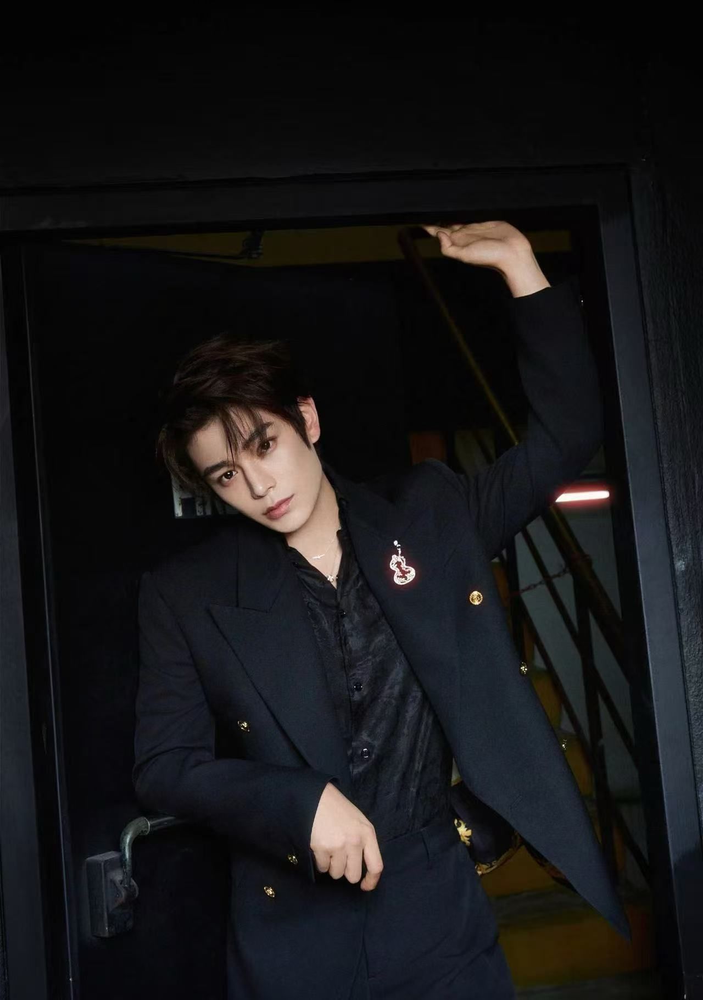
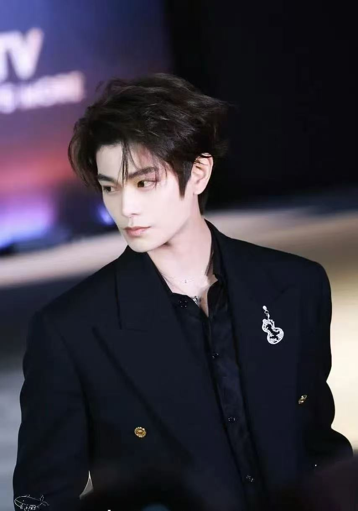

丁禹兮是中国内地男演员出生于1995年7月20，毕业于上海戏剧学院，主要从事影视表演工作，属于青年演员代表之一。他自出道以来持续参与电视剧及网络剧的拍摄，逐渐在青春爱情、古装、轻喜剧及都市题材中形成个人表演风格，擅长塑造性格鲜明、情感表达细腻的角色。 他因主演古装爱情轻喜剧《传闻中的陈芊芊》而获得较高关注度，在剧中展现出较强的角色适配能力与喜剧节奏把控能力，此后陆续出演多部影视作品，进一步拓展戏路与公众认知度。在职业发展中，他不仅参与角色演绎，还涉及影视宣传活动、品牌合作代言以及综艺节目等多类型演艺工作。 从业务层面来看，其主要工作内容包括：影视剧拍摄与角色塑造、剧本阶段的角色研读与排练、参与剧集宣传与路演活动，以及商业品牌合作与形象推广等。他在演艺行业的定位偏向青年流量与实力兼具型演员，市场覆盖以年轻观众群体为主，同时逐步向更广泛的影视类型拓展。
 |
 |